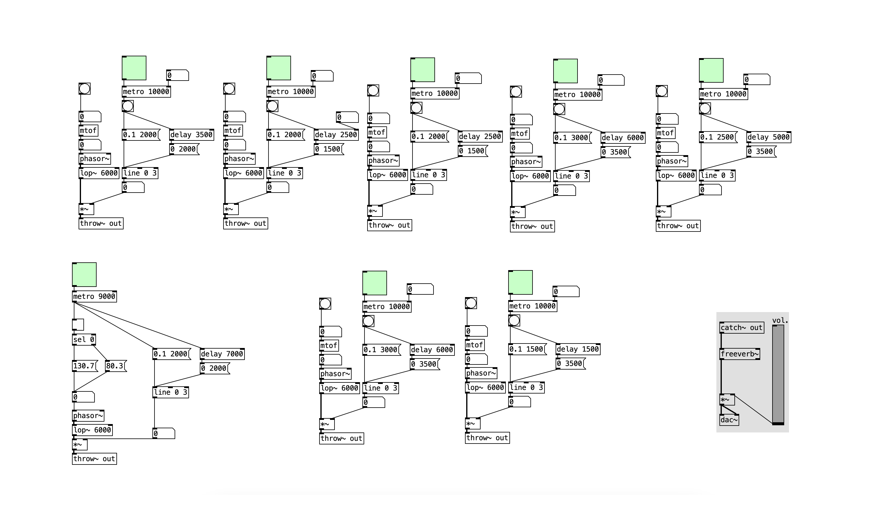
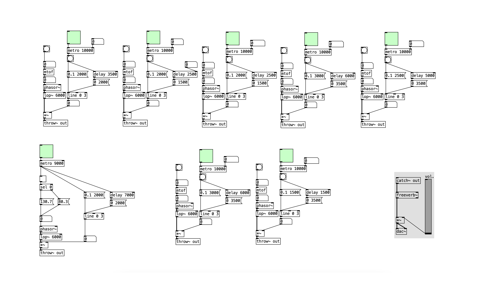

Music Pt 1
Similar to how Touch Designer works with system of ‘nodes’, music is also a system. Instead of nodes, you may have live instruments, midi channels or parameters. Still, it is a system, and the musical outcome all depends on the way that the components (which could, for example, be the individual members of a jazz band) in the system function together. This is something that is important in electronic music where artists will sometimes even create literal systems with machines to create sounds.
For many years, electronic music has been a passion of mine also. I love the process of electronic music, and the range of machines involved; synthesizers, drum sequencers, vocoders, and including turntables, mixers, amplifiers and speakers. I’ve spent my fair share of time understanding how many of these components work.
Despite being a constant source of inspiration for my practice, it's only been very recently in my current practice that I have seen electronic music directly blend with my design practice. The first time being in My Unit 4 Project following a brief to create A ‘music piece’ communicating the joyous consequences of our love and care for world to ‘geeks’, I worked with a programme called ‘Pure Data’ a very stripped-down way of making music, the process can be quite mathematical and complicated which felt very niche and geared towards ‘geeks’.
The outcome I created was a generative piece, I only create the programme and conditions and the computer randomises the rest. It’s more about designing the framework for the outcome to happen, after all, ‘The process is the product’ as the team behind the Conditional Design manifesto (Maurer et al., 2008) state. The manifesto is for their project, Conditional Design, A design method where they set up workshops that they have defined rules and conditions for and then invite others to take part in a ‘process towards an unpredictable design or result’. It’s unpredictable because you, as the designer, have to lessen your influence over what happens, just like how in electronic music, you give up a certain amount of control to the machine. You become one part in a system where no single component has full control.
Image: Screenshot of 'Pure Data' patch I created for my Unit 4 project. This shows the system I created with all its conditions and parameters.